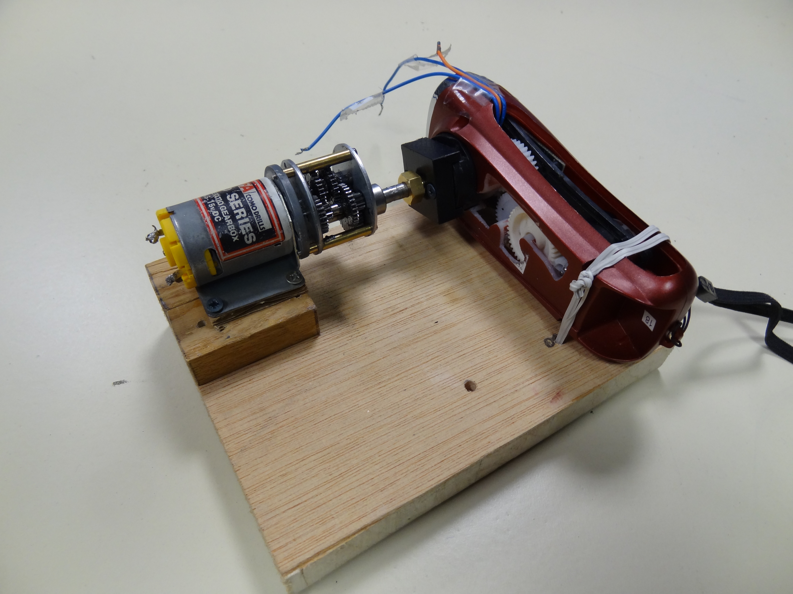

Agrafeuse électrique
Objectifs du TP
- IDENTIFIER les fonctions de chaque constituant
- IDENTIFIER les fonctions des éléments de la chaine d'énergie
- EVALUER les énergies nécessaires à l'agrafage
- VERIFIER le dimensionnement du moteur
- ETUDIER l'autonomie
Freins de vélo
Objectifs du TP
-ANALYSER le besoin
- ANALYSER le système
- REALISER l'étude statique expérimentale
- REALISER l'étude statique théorique
Etude du frottement
Objectifs du TP
-DIFFERENCIER le glissement de l'adhérence
- REALISER l'étude théorique de la machine
- REALISER l'étude expérimentale sur la machine
- ETUDIER le comportement de matériaux non lubrifiés
- ETUDIER le frottement de glissement
- ETUDIER le frottement de roulement
Etude d'un moulinet
Objectifs du TP
- IDENTIFIER le besoin fondamental
- ETUDIER l'environnement
- DISTINGUER les différentes fonctions
- ETUDIER une modification
- IDENTIFIER les paramètres et les lois du mouvement
Etude de la déformation d'une poutre
Objectifs du TP
-ANALYSER le comportement d'une poutre console
- ANALYSER le comportement d'une poutre soumise à un chargement dont la position varie
- VALIDER expérimentalement les calculs et les simulations
- ETUDIER la contrainte
- ANALYSER les conséquences d'un défaut
- ETUDIER le comportement d'une poutre soumise à une charge répartie
Etude d'une lampe dynamo


Objectifs du TP
- IDENTIFIER la valeur ajoutée apportée par la lampe
- MODELISER la lampe à l'aide d'un actigramme
- ANALYSER l'ergonomie et l'esthétique
- ETUDIER la chaine d'énergie et FAIRE LE BILAN énergétique global